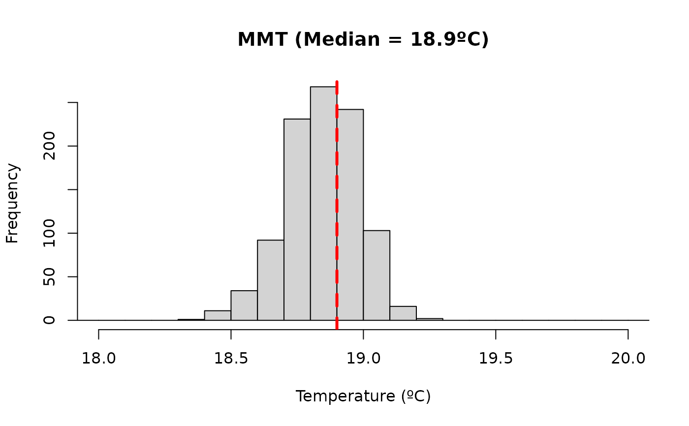

Plot posterior distribution of optimal effect exposure values
Source:R/plot.optimal_exposure.R
plot.optimal_exposure.RdIt plots a histogram of the posterior distribution of the optimal effect exposure values returned by optimal_exposure().
Usage
# S3 method for class 'optimal_exposure'
plot(x, show_median = TRUE, vline.arg = NULL, ...)Arguments
- x
An object of class
"optimal_exposure"returned byoptimal_exposure().- show_median
Logical. If
TRUE(default) the function draws a vertical line for the median of all the posterior samples. IfFALSEit doesn't draw any additional line.- vline.arg
Optional list of graphical arguments passed to
graphics::abline()when drawing the median vertical line.- ...
Optional graphical parameters passed to
graphics::hist().
Details
The histogram uses the original prediction grid in attr(object, "xvar") as the x-axis values, ensuring that the bars align with prediction exposure values. The function plots the posterior distribution of the optimal exposure values (stored in x$est) and highlights the posterior median across samples (stored in x$summary[["0.5quant"]]) with a vertical line if show_median = TRUE. Use vline.arg to change the appearance of that line passed to graphics::abline() and ... to change the graphical parameters of the histogram passed to graphics::hist() (to control axis labels, title, colours, etc.). See the original functions for a complete list of the arguments. Some arguments, if not specified, are set to different default values than the original functions.
References
Quijal-Zamorano M., Martinez-Beneito M.A., Ballester J., Marí-Dell'Olmo M. (2024). Spatial Bayesian distributed lag non-linear models (SB-DLNM) for small-area exposure-lag-response epidemiological modelling. International Journal of Epidemiology, 53(3), dyae061. doi:10.1093/ije/dyae061.
Gasparrini A. (2011). Distributed lag linear and non-linear models in R: the package dlnm. Journal of Statistical Software, 43(8), 1-20. doi:10.18637/jss.v043.i08.
Armstrong B. Models for the relationship between ambient temperature and daily mortality. Epidemiology. 2006;17(6):624-31. doi:10.1097/01.ede.0000239732.50999.8f.
See also
optimal_exposure() to estimate exposure values that optimize the predicted effect for a "bdlnm" object.
Examples
# Set exposure-response and lag-response spline parameters
dlnm_var <- list(
var_prc = c(10, 75, 90),
var_fun = "ns",
lag_fun = "ns",
max_lag = 21,
lagnk = 3
)
# Set cross-basis parameters
argvar <- list(fun = dlnm_var$var_fun,
knots = stats::quantile(london$tmean,
dlnm_var$var_prc/100, na.rm = TRUE),
Bound = range(london$tmean, na.rm = TRUE))
arglag <- list(fun = dlnm_var$lag_fun,
knots = dlnm::logknots(dlnm_var$max_lag, nk = dlnm_var$lagnk))
# Create crossbasis
cb <- dlnm::crossbasis(london$tmean, lag = dlnm_var$max_lag, argvar, arglag)
# Seasonality of mortality time series
seas <- splines::ns(london$date, df = round(8 * length(london$date) / 365.25))
# Prediction values (equidistant points)
temp <- round(seq(min(london$tmean), max(london$tmean), by = 0.1), 1)
if (check_inla()) {
# Fit the model
mod <- bdlnm(mort_75plus ~ cb + factor(dow) + seas, data = london,
family = "poisson", sample.arg = list(seed = 432, seed = 1L))
# Find minimum risk exposure value
mmt <- optimal_exposure(mod, exp_at = temp)
# Plot
plot(mmt, xlab = "Temperature (ºC)",
main = paste0("MMT (Median = ", round(mmt$summary[["0.5quant"]], 1), "ºC)"))
}
#> Warning: Since 'seed!=0', parallel model is disabled and serial model is selected, num.threads='1:1'
